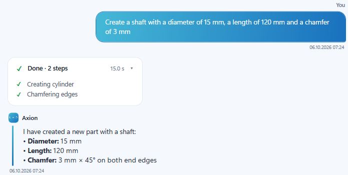
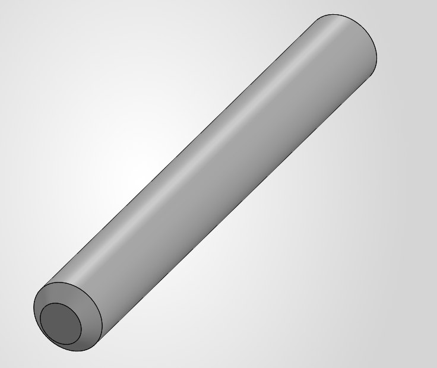
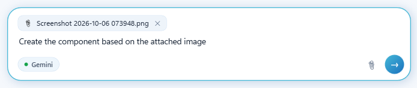
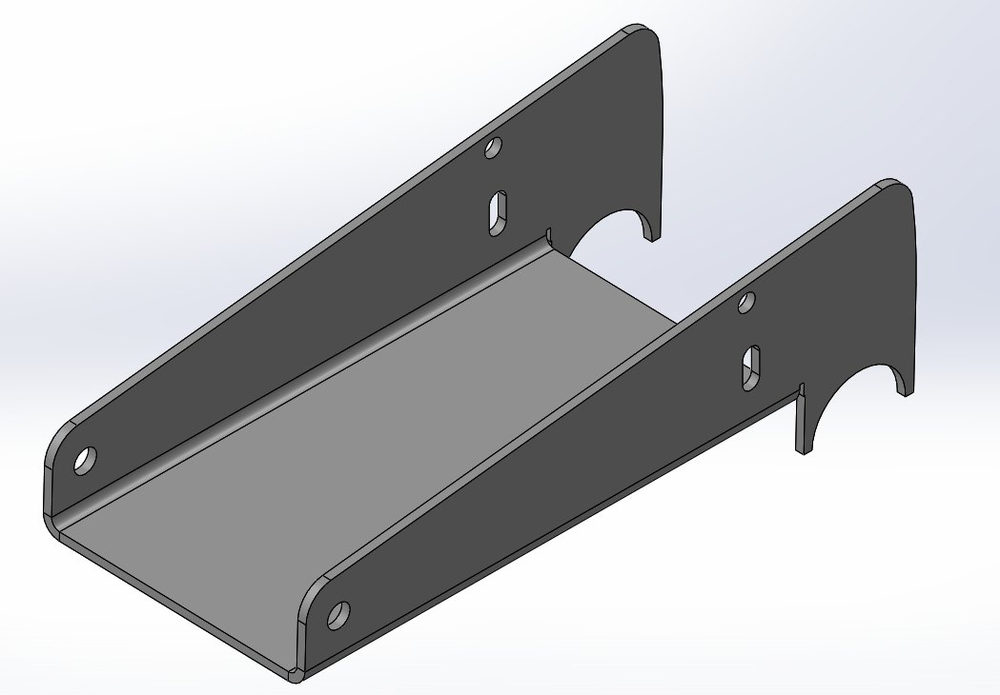
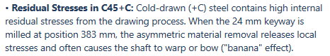

CASE 01
Modelování ze zadání běžnou řečí
Part2.SLDPRT · Ø15 × 120›Vytvoř hřídel o průměru 15 mm, délce 120 mm a se sražením 3 mm



Needitované snímky odpovědí Axionu na výrobních výkresech a modelech. Anonymizovali jsme jen názvy dílů.










Snímky jsou v původním znění (anglicky). Kliknutím odpověď zvětšíte.
Ne. Modelování je jedna z funkcí. Hlavní hodnota je v propojení dat: čtení živé geometrie a výkresů, kontrola norem a vyrobitelnosti, odhad ceny a znovupoužití existujících dílů.
Ano. Šablony, formáty listů, materiály, pravidla i zdroje dat pro kontroly se nastaví pro vaši firmu, aby výsledky odpovídaly tomu, jak pracujete.
Tu, kterou používáte. Axion je nativní add-in s vlastním panelem a postavíme ho pro verzi SOLIDWORKS, která běží u vás ve firmě.
Domluvte si ukázku. Předvedeme Axion na vašich dílech a výkresech a nastavíme ho podle vašich norem.
Napište nám a připravíme ukázku na vašich dílech, výkresech a firemních normách.